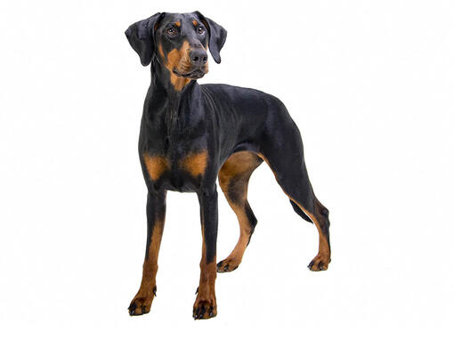

1-Una foto que te guste mucho
Tenia una perrita doberman pero ya se murio.

2-Una seccion con una breve biografia tuya
Me llamo Erick Iván Ortiz Gasca, actualmente tengo 25 años comencé mi carrera profesional como ingeniero mecatronico sin embargo me encuentro ejerciendo como desarrollador back end. He realizado el desarrollo de un Bot programado en PHP para la UADY como parte de mis practicas profesionales. Actualmente mi interes está en las tecnologias Java, principalmente el framework de Spring.
3-Una seccion donde hables de tu mayor logro(academico,profesional,personal)
El mayor logro profesional que considero tener actualmente ha sido el participar en el desarrollo de un bot de monitoreo de recursos, pues lo desarrollé desde cero en un lenguaje que era nuevo para mi (PHP) de igual forma aprendí sobre conexiones a bd y apis. .
4-Una seccion con una lista desordenada con 6 de tus bebidas favoritas
- Jamaica
- Limonada
- Naranjada
- Cafe de vainilla
- Malteada de vainilla
- Jugo de granada
6-Crea una lista descriptiva, donde expliques los siguientes términos: función, let, const y tres etiquetas de html que no hayamos visto en sesión.
- Funcion:
- Una funcion en programacion es un bloque de codigo que ejecuta una accion en particular y puede ser reutilizado(llamado) tantas veces como sea necesario.
- Let:
- Es una palabra reservada y sirve para declarar variables, además permite definir el alcance de la variable de acuerdo a las necesidades del programador.
- Const:
- Es una palabra reservada que especifica que el valor de una variable es constante.
- "Aside":
- Representa una sección de una página que consiste en contenido que está indirectamente relacionado con el contenido principal del documento.
- "nav":
- Representa una sección de una página cuyo propósito es proporcionar enlaces de navegación, ya sea dentro del documento actual o a otros documentos.
- "progress":
- Se utiliza para visualizar el progreso de una tarea.
7-Crea una lista anidada, sobre el tema que quieras, pero con la siguiente estructura:
Tipos de Postres
- Pasteles
- Chocolate
- Con relleno y cubierta
- Con relleno y sin cubierta
- Vainilla
- Con frutas y cubierta
- Sin frutas y con cubierta
- Comerciales
- pinguinos
con cobertura de chocolate
- chocorroles
- Congelados
- Malteadas
- Helados
- De frutas Naturales
- Marca Holanda
- Marca Nestle